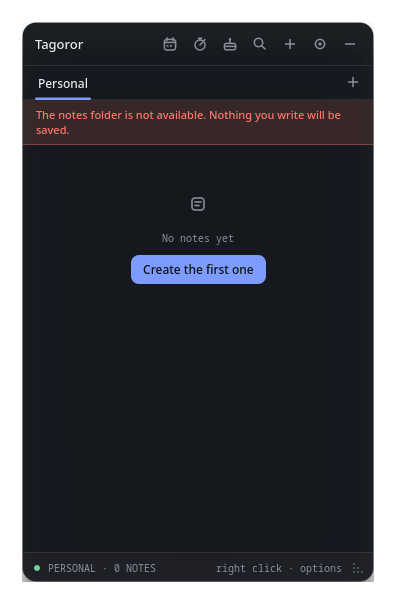
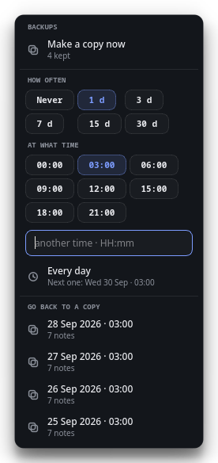

Siempre a la vista. Guardado donde tú decidas.Always in sight. Saved where you decide.
Notas, recordatorios y planificación en un panel translúcido que vive sobre tu escritorio de Linux o Windows. Sin cuenta y sin nube obligatoria.Notes, reminders and planning in a translucent panel that lives on your Linux or Windows desktop. No account, no mandatory cloud.
Escribe, marca, programa o dicta.Write, tick, schedule or speak.
Pulsa + en el panel y elige. Cada nota es una tarjeta compacta que puedes reordenar, buscar y editar sin salir del escritorio.Hit + in the panel and pick one. Every note is a compact card you can reorder, search and edit without leaving the desktop.
Recordatorios que suenan de verdad.Reminders that actually ring.
No es una notificación que se pierde en una esquina. La alarma suena en bucle hasta que la paras, con un tono que Tagoror sintetiza al momento.Not a notification lost in a corner. The alarm loops until you stop it, with a tone Tagoror synthesises on the spot.
Con el panel plegado no te lo pierdes: el dock se convierte en una campana roja mientras haya una alarma.Even with the panel folded you won't miss it: the dock turns into a red bell while an alarm is active.
Tu semana, en la misma rejilla.Your week, on one grid.
Eventos y tareas con categorías. Los recordatorios y cumpleaños aparecen solos, junto a todo lo demás.Events and tasks with categories. Reminders and birthdays show up on their own, next to everything else.
Tus datos, donde tú quieras.Your data, wherever you want.
Tagoror guarda las notas como archivos en una carpeta que eliges tú. No hay servidor, no hay cuenta y nada sale de tu equipo si no lo pides.Tagoror stores notes as files in a folder you pick. No server, no account, and nothing leaves your machine unless you ask.
drive.file, que solo ve lo que crea Tagoror.Across computers, merging changes item by item. With the minimum scope: drive.file, which only sees what Tagoror creates.

Pruébalo aquí: elige un acento.Try it here: pick an accent.
El acento es el único color fuerte de Tagoror. Cámbialo y mira cómo se tiñe esta página.The accent is Tagoror's only strong colour. Change it and watch this page follow.
Gratis, para siempre, en tu escritorio.Free, forever, on your desktop.
Todo enlaza a la última versión publicada en GitHub.Everything links to the latest release on GitHub.
git clone https://github.com/Larzt/tagoror cd tagoror/packaging/arch makepkg -siLo instala a través de pacman;
pacman -R tagoror lo quita sin tocar tus notas.Installs through pacman; pacman -R tagoror removes it without touching your notes.
git clone https://github.com/Larzt/tagoror cd tagoror cmake -B build -DCMAKE_BUILD_TYPE=Release cmake --build buildNecesitas Qt 6 y un compilador con C++20.You need Qt 6 and a C++20 compiler.
Preguntas frecuentesFAQ
¿Es gratis?Is it free?
Sí. Tagoror es software libre con licencia MIT: gratis, sin versión premium y con todo el código en GitHub.Yes. Tagoror is free software under the MIT license: no premium tier, and all the code is on GitHub.
¿Necesito una cuenta?Do I need an account?
No. Se abre y funciona. Solo si activas la sincronización te pedirá acceso a tu Google Drive, con el permiso mínimo.No. Open it and it works. Only if you turn on sync will it ask for access to your Google Drive, with the minimum scope.
¿Funciona en Wayland?Does it work on Wayland?
Sí. La única limitación es que en Wayland el panel siempre se despliega hacia abajo y a la derecha del dock.Yes. The only limitation is that on Wayland the panel always unfolds down and to the right of the dock.
¿Dónde se guardan mis notas?Where are my notes stored?
En la carpeta que elijas: tu carpeta personal, un disco externo o un USB. Si no está disponible, Tagoror no escribe nada y te avisa.In the folder you choose: your home folder, an external drive or a USB stick. If it isn't available, Tagoror writes nothing and warns you.
¿Se actualiza sola?Does it update itself?
No. Te avisa cuando hay una versión nueva, pero nunca descarga nada por su cuenta. Y puedes apagar el aviso.No. It lets you know when a new version is out, but never downloads anything on its own. You can turn the notice off too.